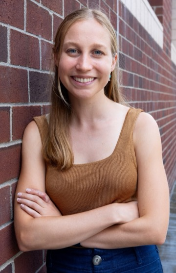

I am a final-year PhD student in computer science at MIT, advised by John Guttag and Rosalind Picard. I'm on the job market for post-doc and industry positions.
My research is at the intersection of machine learning, causality, and language modeling. My goal is to make language models reliable enough to trust in high-stakes settings like healthcare. My recent work develops methods to make language model predictions robust to shortcuts, and methods to measure and improve the extent to which language model explanations faithfully represent the model's true decision-processes. Earlier in my PhD, I worked on self-supervised representation learning and causally-motivated approaches for out-of-distribution generalization, with applications to physiological and mental health data.
Before MIT, I received my M.S.E. and B.S.E. in computer science from the University of Michigan, where I was lucky to work with Emily Mower Provost. I spent a fun summer in 2023 interning at Microsoft Research, where I worked with Emre Kıcıman and Robert Ness. When I'm not working on solving problems, you can probably find me running away from them.
You can reach me at kmatton@mit.edu.